YT MusicDownloader
Songs from YouTube, saved to your phone or PC with the right title, artist, album and cover art.
- Single songs and whole playlists
- On Android phones and Windows PCs
- Failed downloads retry on their own
Version 1.015 Oct 2026
Version 1.0.026 Oct 2026
| Android | Windows | |
|---|---|---|
| File | yt-music-downloader.apk | yt-music-downloader-setup.exe |
| Size | About 67 MB | About 75 MB |
| Runs on | Android 10 and up, 64‑bit phones | Windows 10 and 11, 64‑bit |
| Installs from | This page, not an app store | |
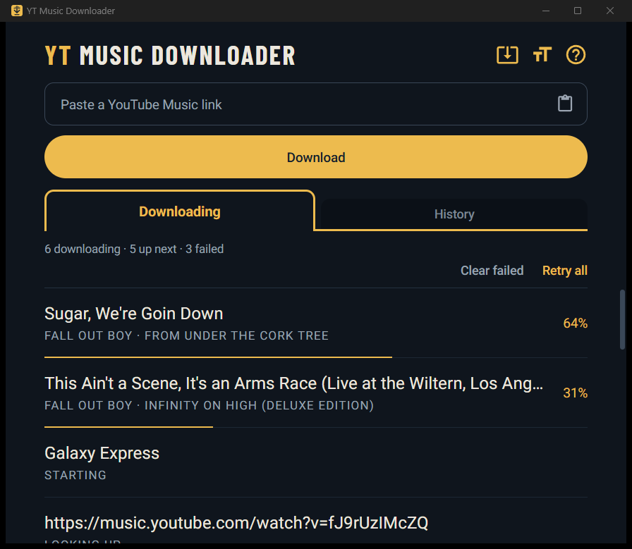
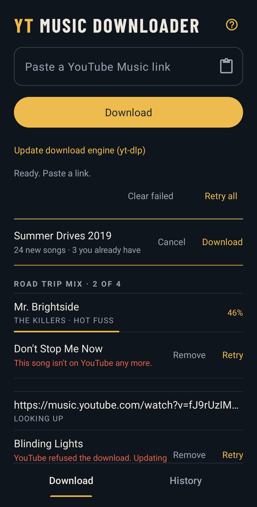
Setup
Tap a step to see its screen.
- Download itThen open yt-music-downloader.apk.
- Open it with Package installerIf your phone asks what to use.
- Get past Play ProtectMore details, then Install anyway.
- Install itIf asked, allow your browser. Then Install.
- Open it once, onlineIt gets the download engine (yt-dlp).
- Allow notificationsProgress shows there.
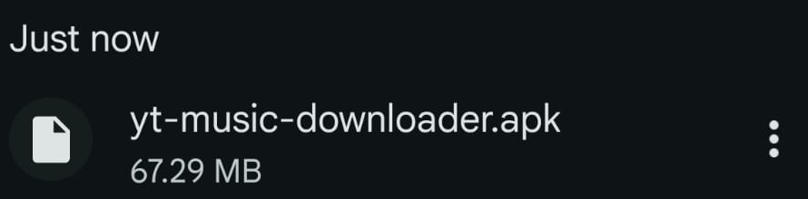
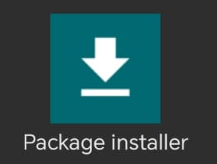
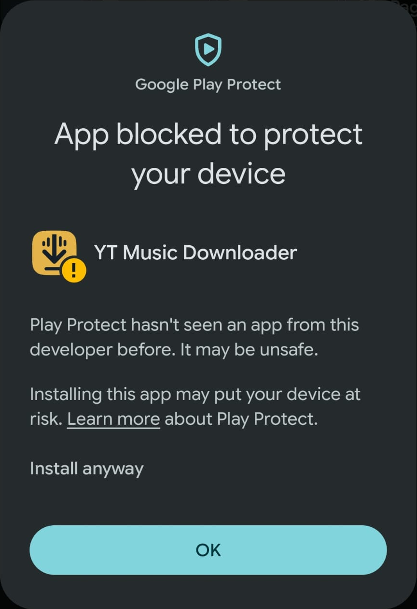
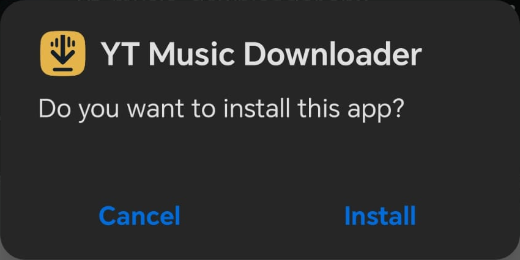
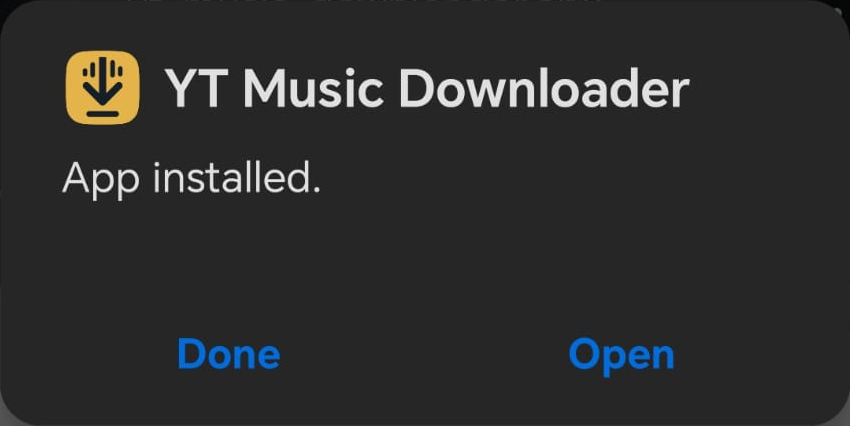
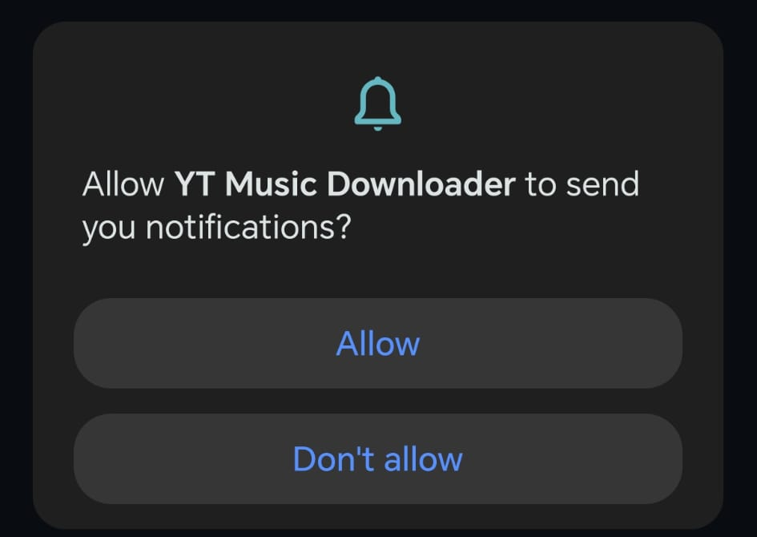
- Download itThen open yt-music-downloader-setup.exe.
- Get past SmartScreenIf it says Windows protected your PC: More info, then Run anyway.
- Install itClick through. It adds itself to the Start menu.
- Open itEverything it needs is inside, so it's ready straight away.
Mockup: these screens come from installing 1.0.0 off the live page. SmartScreen, the installer, and the app in the Start menu.
How to use it
Tap a step to see its screen.
- Share a song or playlistShare, then Share with other apps.
- Pick YT Music DownloaderYou stay in YT Music.
- Copy its linkFrom YT Music, or your browser on a PC.
- Paste it in the appThe paste icon, then Download.
- On a PC, pick the folderThen Download again.
- Big playlist? Say yesOn a phone, over 20 songs asks first. A PC just starts.
- Let it runFive songs at a time.
- Play itOn a phone, songs land in your Music folder. On a PC, in the folder you picked.
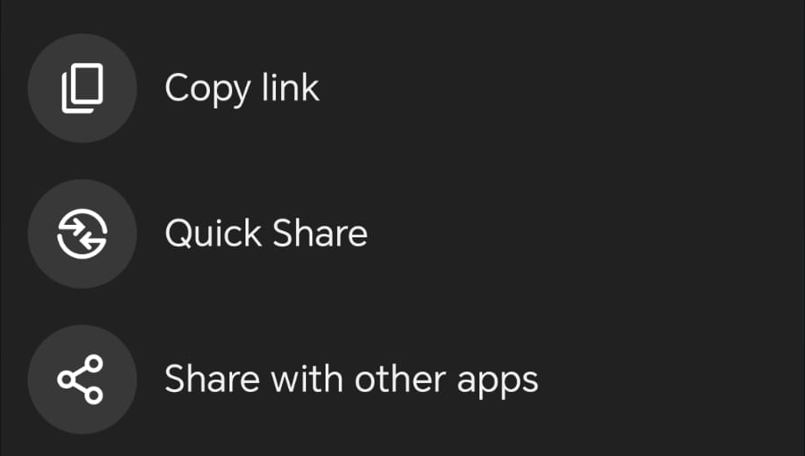
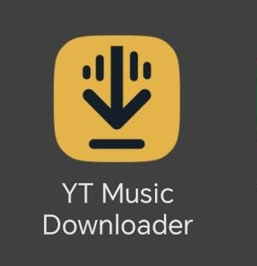
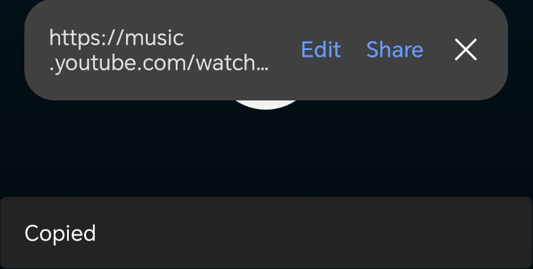
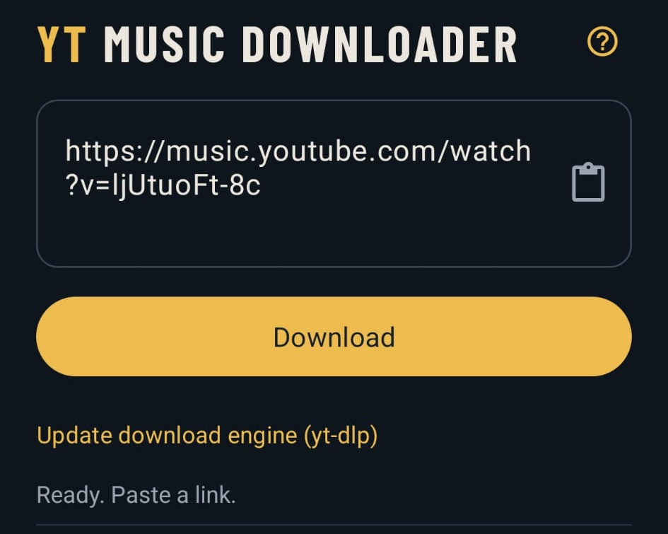
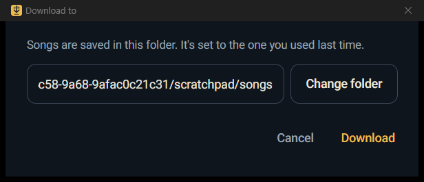
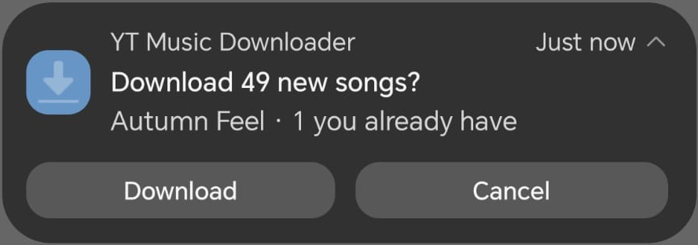
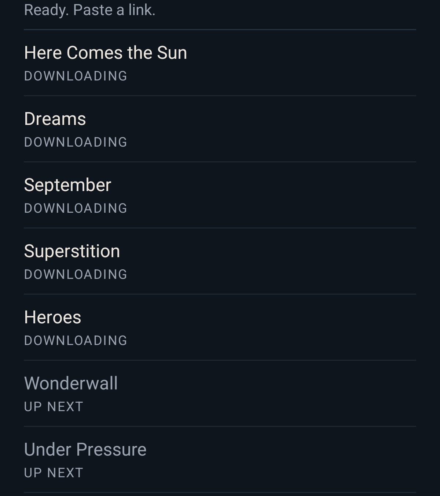
What it's for
Made for
- Offline listeningno subscription
- Whole playlists and albumsbig ones too
- Proper tagstitle, artist, album, cover art
- Topping up playlistsonly new songs download
- Phone and PCAndroid and Windows
Not
- A music playeryour music app plays them
- A video downloaderaudio only
- A sync toolphone and PC keep their own
- From YouTube or GoogleI built it
- For iPhone or MacAndroid and Windows only
FAQ
Why does my phone or PC warn me when I install it?
It isn't from an app store, so the warning hasn't seen it before. On a phone, Play Protect says it may be unsafe: tap More details, then Install anyway. On Windows, SmartScreen says Windows protected your PC: click More info, then Run anyway.
Do I need YouTube Premium or an account?
No. The app doesn't sign in to anything.
What links work?
- A song from YouTube or YT Music
- A playlist, yours or anyone else's, as long as it isn't private
- An album from YT Music, and its songs get their track numbers too
Private playlists and your Liked songs won't work, cause the app can't sign in to YouTube.
Where do my songs go?
On a phone, into your Music folder. On Windows, into the folder you pick each time, starting on the one you used last.
Can I close the app while it downloads?
On a phone it keeps going in the background. On Windows it asks first: Minimise keeps songs going, Close stops them and they carry on next time.
What quality are the songs?
128 kbps AAC, saved as .m4a. It's the audio YouTube streams, kept as it is, with no converting.
A download failed. What do I do?
It tries 3 more times by itself. If it still fails, use Retry. If lots fail, update the download engine (yt-dlp): on a phone with its button, on Windows with the gold arrow icon at the top.
What if I get a song I already have?
A playlist skips songs you already have, on both. A single song: the phone asks if you want it again, Windows just downloads it again.
Do plain YouTube links work?
Yes, but YT Music links come out cleaner.
How do I get the newest version?
Download it again from this page. Yours is at the bottom of the app's Help.